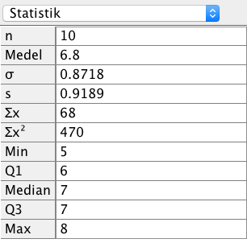
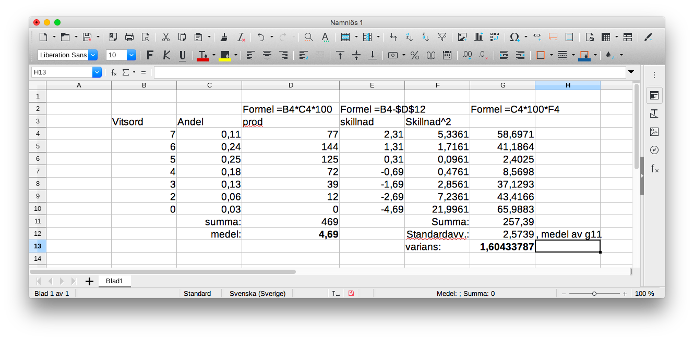

13. Diskret statistik
Statistik delas in i diskret och kontinuerlig statistik. Diskret statistik är det som du är bekant med från högstadiet mellan kontinuerlig statistik behandlar bland annat normalfördelningen. Vi börjar med diskret statistik och fortsätter med kontinuerligt statistik.
Anna och Bertil jämför sina vitord i långa matematiken.
| MaG | MaA 2 | MaA 3 | MaA 4 | MaA 5 | MaA 6 | MaA 7 | MaA 8 | MaA9 | MaA10 | |
|---|---|---|---|---|---|---|---|---|---|---|
| Anna | 9 | 9 | 8 | 8 | 7 | 8 | 8 | 9 | 7 | 7 |
| Bertil | 9 | 7 | 9 | 7 | 7 | 7 | 7 | 8 | 9 | 10 |
Vi bestämmer medeltalet för deras vitsord på ett par olika sätt. Först gör vi det normalt genom att \( \dfrac{\textrm{totala summan}}{\textrm{totala antalet}} \).
För Anna gäller \( \dfrac{9+9+8+8+7+8+8+9+7+7}{10} = 8,0 \) och för Bertil gäller \( \dfrac{9+7+9+7+7+7+7+7+8+9+10}{10}=8,0 \).
Vi kan också bestämma medelvärden genom att först göra upp en tabell.
| Vitsord | Anna | Bertil |
|---|---|---|
| 10 | 1 | |
| 9 | 3 | 3 |
| 8 | 4 | 1 |
| 7 | 3 | 5 |
Vill vi utgående från detta bestämma Annas medeltal går det nu lättare \( \dfrac{3\cdot 9+4\cdot 8 + 3\cdot 6}{10} = 8,0 \).
Från detta kan vi bilda en tabell över relativ frekvens. Den relativa frekvensen för Bertils 10:a är \( 1/10 = 0,10 = 10 \% \).
| Vitsord | Anna | Bertil |
|---|---|---|
| 10 | 10 % | |
| 9 | 30 % | 30 % |
| 8 | 40 % | 10 % |
| 7 | 30 % | 50 % |
Vill vi bestämma Annas medeltal utgående från den relativa frekvensen gör vi som följande \( \dfrac{30 \cdot 9+40\cdot 8 +30\cdot 7}{100} = 8,0 \).
Vill vi rita grafer över deras vitsord kan vi göra som följande.
Anna och Bertil har bägge medeltalet 8,0 men när vi jämför typvärdet, det vitsord de har fått flest gånger, märker vi att Annas typvärde är 8 medan Betils är 7.
För att beakta spridningar av vitsord använder vi oss i statistiken av varians och standardavvikelse.
Vi börjar med att jämföra hur mycket kursvitsorden skiljer sig från medeltalet.
| MaG | MaA 2 | MaA 3 | MaA 4 | MaA 5 | MaA 6 | MaA 7 | MaA 8 | MaA 9 | MaG0 | |
|---|---|---|---|---|---|---|---|---|---|---|
| Anna | 1 | 1 | 0 | 0 | -1 | 0 | 0 | 1 | -1 | -1 |
| Bertil | 1 | -1 | 1 | -1 | -1 | -1 | -1 | 0 | 1 | 2 |
Variansen är ett mått över medeltalet av kvadraten över mätvärdenas avstånd till medeltalet.
Vi bestämmer varianserna för Anna och Bertil.
Anna: \( \dfrac{1^2+1^2+0^2+(-1)^2+0^2+0^2+1^2+(-1)^2+(-1)^2}{10} = 0,60 \).
Bertil: \( \dfrac{1^2+(-1)^2+1^2+(-1)^2+(-1)^2+(-1)^2+(-1)^2+0^2+1^1+2^2}{10} = 1,20 \).
För att bestämma standardavvikelsen tar vi roten ur variansen.
Standardavvikelsen för Annas vitsord är \( \sqrt{0,60} = 0,77 \) och för Bertil \( \sqrt{1,20} = 1,10 \).
Eftersom Bertils vitsord har en större spridning har standardavvikelsen ett större värde. Något som vi märkte då vi ritade vitsorden som grafer.
Exempel 1 Rita och analysera vitsorden för Annas och Bertils vitsord på GeoGebra.
Uppgifter
- Cecilias vitsord i matematiken ser ut som
MaG MaA 2 MaA 3 MaA 4 MaA 5 MaA 6 MaA 7 MaA 8 MaA 9 MaG0 8 7 7 6 5 6 7 7 7 8 - Bestäm medeltalet
6,8
- Bestäm standardavvikelsen
0,87
- Bestäm medeltalet
- När skostorlekarna undersöktes i en undervisningsgrupp fick man följande resultat:
Storlek Antal 37 5 38 7 39 7 40 3 41 4 42 8 43 5 - Bestäm antalets relativa frekvens.
Storlek Relativ frekvens (som hela procent) 37 13 38 18 39 18 40 8 41 10 42 21 43 13 Totala procenten blir 101 %, det är inte så farligt.
- Bestäm typvärdet.
42
- Vilken storlek har man i medeltal i undervisningsgruppen?
40
- Bestäm standardavvikelsen för skostorlekarna.
2
- Bestäm antalets relativa frekvens.
- Bestäm medelvärdet och standardavvikelsen för dina vitsord i ett ämne där du har läst i alla fall fem kurser.
Lösningen
- Cecilia och Daniel jämför sina vitsord i matematiken. Vitsorden ser du i tabellen nedan.
MaG MaA 2 MaA 3 MaA 4 MaA 5 MaA 6 MaA 7 MaA 8 MaA9 MaA10 Cecilia 8 7 7 6 5 6 7 7 7 8 Daniel 9 8 8 7 6 5 6 6 7 6 Vem av Cecilia eller Daniel har jämnare prestationer för vitsorden?
Bilda standardavvikelsen för vitsorden och jämför dem.
Bägge har samma medelvärde, 6.8
I GeoGebras Dataanalys får vi fram följande för Cecilias vitsord:

I GeoGebras Dataanalys får vi fram följande för Daniels vitsord:

Standardavvikelsen för Cecilas vitsord är 0,8718, och för Daniels vitsord är standardavvikelsen 1,1662.
Alltså har Cecilia jämnare prestationer för vitsorden.
- Den procentuella fördelningen för långa matematiken våren 2004 ser du i tabellen nedan.
Aatos Lahtinen, Matematiikan ylioppilaskirjoitus keväällä 2004, Dimensio 6/2004 L (7 poäng) E (6 poäng) M (5 poäng) C (4 poäng) B (3 poäng) A (2 poäng) I (0 poäng) 11 % 24 % 25 % 18 % 13 % 6 % 3 % Bestäm medelvädet av vitsordet och standardavvikelsen.
7 poäng vid Laudatur betyder att vitsordet motsvaras av 7 poäng.
Vi jobbar på LibreOffice och skapar följande tabell:

Medeltalet är 4,7 och variansen är 1,6.
Tyvärr är denna typ av uppgift lättare att lösa på LibreOffice.